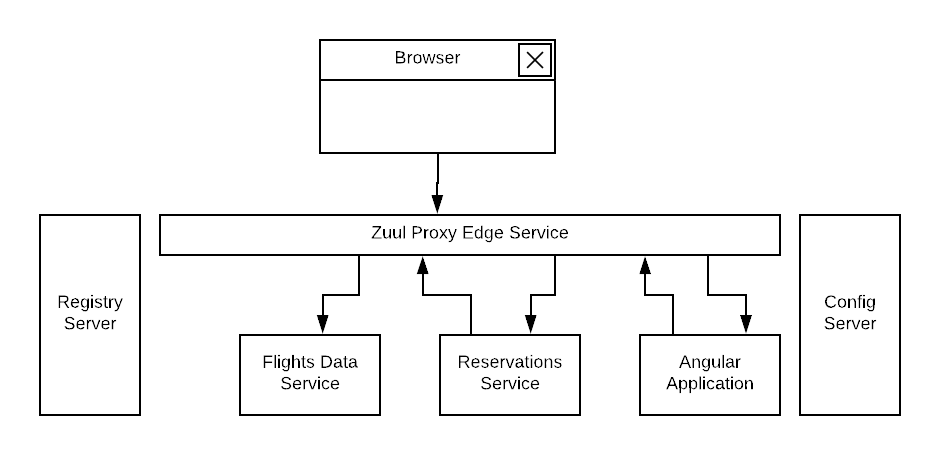
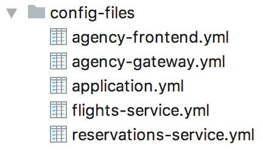
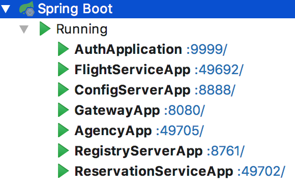
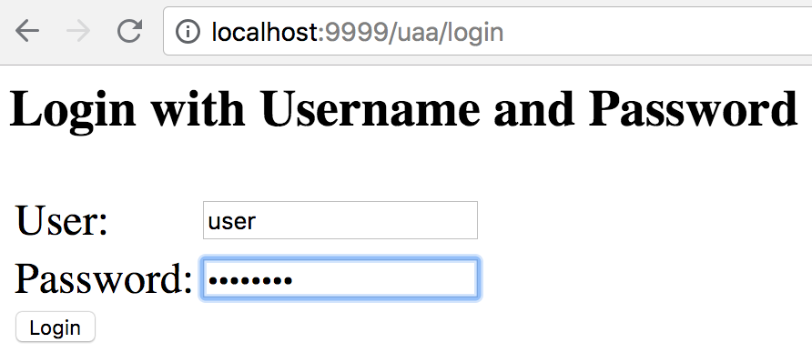
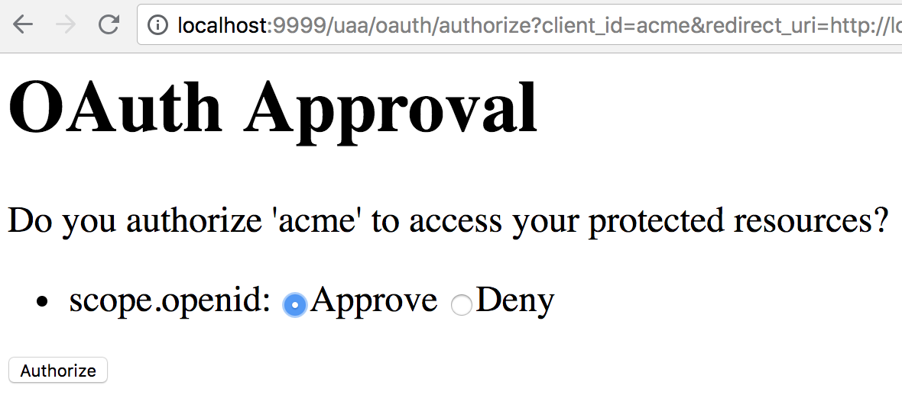

This article describes how to secure an application using Spring security OAuth2 generation-one. The sample consists of an Angular front-end application and a couple of Spring boot based backend services. Both frontend application and backend services are behind an edge proxy that assumes the responsibility to authenticate and authorize a user. Spring Cloud common services such as spring cloud configuration and spring cloud Eureka registry services are used.
Architecture

All components are behind an edge proxy service. Spring Cloud Zuul is used as the edge service. A user launch the application using a route to the landing index page of the front-end UI application. The front-end UI is implemented as an Angular-based separate project that compiled and packaged into a spring-boot application. The front-end UI application reaches out to a backend reservations service through the edge proxy. The reservations services in turn seeks flights information by routing via the edge proxy to another backend flights data service.
This architecture enables us to have the following:
1- Communications between all modules to go through an edge-service to centrally manage security, logging and other common concerns
2- Use of authentication token relay between edge proxy service and front-end UI application
3- Use of Spring Feign to communicate between the two backend services
4- Use of a Feign intercepter to inject authentication token when communicating to a downstream backend Flights data service.
Services Configuration
Spring Cloud Config Server is used externalize all modules configurations. For easy launching, the configuration server launches with a native profile to leverage a local backend storage to keep the “yml” properties files.
With the appropriate dependencies, you can create a configuration server as a regular spring boot application by enabling the server with “@EnableConfigServer” annotation.
@SpringBootApplication
@EnableConfigServer
public class ConfigServerApp {
public static void main(String[] args) {
SpringApplication.run(ConfigServerApp.class, args);
}
}
One can start the configuration server with the following settings:
spring:
profiles: native
cloud:
config:
server:
native:
searchLocations: file:///[path-to-yml-files]
As in this sample, you can keep all the “yml” configuration files in some local storage path:

Each configuration file is named after the name of the corresponding configured application and as defined by “spring.application.name” property in that application.
This application name and the configuration service’s URL are defined in each application’s “bootstrap.yml” file inside the “resources” folder. For instance, the flights data service would have a “bootstrap.yml” file with a content such as:
spring:
application:
name: flights-service
cloud:
config:
fail-fast: true
uri: http://localhost:8888
Services Registration and Discovery
Spring Cloud Eureka is used for services registration and discovery. It is also created with its appropriate dependency as a regular spring boot application. We only need to annotate the application class with “@EnableEurekaServer”
@SpringBootApplication
@EnableEurekaServer
public class RegistryServerApp {
public static void main(String[] args) {
SpringApplication.run(RegistryServerApp.class, args);
}
}
and set it such that it would not register itself.
eureka:
client:
register-with-eureka: false
fetch-registry: false
OAuth2 Authorization Server
Creating an OAuth2 authorization server is simple using Spring security and OAuth2 dependencies
<dependency>
<groupId>org.springframework.boot</groupId>
<artifactId>spring-boot-starter-security</artifactId>
</dependency>
<dependency>
<groupId>org.springframework.security.oauth</groupId>
<artifactId>spring-security-oauth2</artifactId>
</dependency>
As listed in the repo, a configuration class is added with “@EnableAuthorizationServer” annotation.
@Configuration
@EnableAuthorizationServer
public class AuthorizationServer extends AuthorizationServerConfigurerAdapter {
...
}
A client in this class is defined with Id as “acme”, secret as “acmesecret”, different grant types and scopes as “openid”. You can optionally set the scopes auto-approval.
To enable resource servers (backend services) to decode the authorization tokens, this server exposes a “../user” endpoint that exposes an authenticated principal.
As configured, users authenticate using a login form mechanism
@Configuration
public class WebSecurity extends WebSecurityConfigurerAdapter {
@Override
protected void configure(HttpSecurity http) throws Exception {
http.authorizeRequests()
.anyRequest().authenticated()
.and()
.formLogin().permitAll();
}
}
Although its also appropriate to apply an “Implicit” OAuth2 flow in single page applications, in this illustration example, we will be exercising OAuth2 “authorization_code” flow.
Front-End UI Application
UI application is implemented using Angular (6). A simple spring boot project is also created to serve the client UI application. In order to build the Angular module into the spring boot project, a maven plugin is used to run “ng build” command during the “validate” stage and direct the output to the spring boot “resources” folder.
<plugin>
<groupId>org.codehaus.mojo</groupId>
<artifactId>exec-maven-plugin</artifactId>
<version>{version}</version>
<executions>
<execution>
<phase>validate</phase>
<goals>
<goal>exec</goal>
</goals>
</execution>
</executions>
<configuration>
<executable>ng</executable>
<workingDirectory>../agency-ui</workingDirectory>
<arguments>
<argument>build</argument>
<argument>--output-path</argument>
<argument>../agency-frontend/src/main/resources/static</argument>
</arguments>
</configuration>
</plugin>
This UI client application represents one of the secured resources behind the edge proxy, it also registered in Eureka to be discovered and routed by the proxy. Therefore, a configuration class marked with “@EnableResourceServer” annotation is added to authorize access to the client application while allowing some of its “actuator” administration endpoints that are needed by Eureka’s health checking.
@Configuration
@EnableResourceServer
public class ResourceServerConfig extends ResourceServerConfigurerAdapter {
@Override
public void configure(HttpSecurity http) throws Exception {
http
.requestMatcher(new RequestHeaderRequestMatcher("Authorization"))
.authorizeRequests()
.antMatchers("/admin/info", "/admin/health/**").permitAll() // allow actuator endpoints
.anyRequest().authenticated();
}
}
Resource Servers / Back-End Services
There are two resource servers as backend services. A reservation service that helps to search flights, perform booking and issue confirmations. In order to perform its function, this service utilizes a downstream flights service that only acts as data-as-a-service to retrieve information from a database of flights information.
The reservation service uses Spring Cloud Feign as a client to interact with the flights data service.
Flights data service
Flights data service is implemented using Spring Data to retrieve flights information from a backend database (H2). Spring Data Rest is used to expose Flight search results. One can search a flight passing in an origin airport, destination airport, besides travel and return dates.
@RepositoryRestResource(collectionResourceRel = "flights", path = "flights")
public interface FlightRepository extends PagingAndSortingRepository<Flight, Long> {
@RestResource(path = "datedlegs", rel = "datedlegs")
@Query("SELECT f FROM Flight f WHERE f.origin = ?1 AND f.destination = ?2 "
+ " AND f.departure between ?3 and ?4")
public List<Flight> findFlightsByCustomQueryDated(@Param("origin") String origin,
@Param("destination") String destination,
@Param("mindate") @DateTimeFormat(pattern = "yyyy-MM-dd") Date mindate,
@Param("maxdate") @DateTimeFormat(pattern = "yyyy-MM-dd") Date maxdate);
...
}
This service is also an OAuth2 secured resource server that includes same OAuth2 dependencies and “ResourceServerConfig” configuration class as in the Client application.
Reservations service
The reservation class is a Spring Boot application that exposes “/search” and “/book” endpoints in a RestController. As a secured OAuth2 resource server, this service includes same OAuth2 dependencies and “ResourceServerConfig” configuration class as in the Client application.
To pass the authorization token of an authenticated client downstream when using a Feign client, this service includes a “RequestInterceptor” to inject the token in a header of the “RequestTemplate”.
@Component
public class FlightClientInterceptor implements RequestInterceptor {
private static final String AUTHORIZATION_HEADER = "Authorization";
private static final String BEARER_TOKEN_TYPE = "Bearer";
@Override
public void apply(RequestTemplate template) {
SecurityContext securityContext = SecurityContextHolder.getContext();
Authentication authentication = securityContext.getAuthentication();
if (authentication != null && authentication.getDetails() instanceof OAuth2AuthenticationDetails) {
OAuth2AuthenticationDetails details = (OAuth2AuthenticationDetails) authentication.getDetails();
template.header(AUTHORIZATION_HEADER, String.format("%s %s", BEARER_TOKEN_TYPE, details.getTokenValue()));
}
}
}
Edge Proxy
Spring Cloud Zuul is used to implement the edge proxy. All access to backend services including the client application itself would go through this proxy.
The application’s main class is marked with “@EnableZuulProxy” and OAuth2 Single Sign-On “@EnableOAuth2Sso” annotations.
Single Sign On feature is
@SpringBootApplication
@EnableZuulProxy
@EnableOAuth2Sso
public class GatewayApp {
...
}
Routes are defined for this application as shown below. The server is exposed with port 8080, default URL “http://localhost:8080” would route to the UI client application index page. Routes to other two backend reservations and flights services are also configured.
zuul:
ignoredServices: '*'
routes:
flights:
path: /flights/**
serviceId: FLIGHTS-SERVICE
reservations:
path: /reservations/**
serviceId: RESERVATIONS-SERVICE
ui:
path: /**
url: AGENCY-FRONTEND
Token relay feature to other proxied services is used, to enable that we need to include this dependency:
<dependency>
<groupId>org.springframework.cloud</groupId>
<artifactId>spring-cloud-starter-security</artifactId>
</dependency>
Testing
… todo …
Application Flow**
After launching all the applications in this example

When accessing http://localhost:8080, you will be directed to a login screen to authenticate. Use username as “user”, password as “password”

You will then be asked to authorize the scope, click on “Approve”

After approving the scope you will be landed at the application’s homepage
You can search flights from “AUS” to “IAH” airports, traveling 5/5/2018 and returning 5/22/2018
Code Repository
Please reference this example’s code in its GitHub repository, branch name is “separate-proxy-oauth2”.